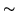
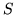

To conclude this chapter,
this section presents a formal description
of the HMM definition language used by HTK.
Syntax is described using an extended BNF notation in which
alternatives are separated by a vertical bar  , parentheses () denote
factoring, brackets [ ] denote options, and braces {} denote zero or more
repetitions.
, parentheses () denote
factoring, brackets [ ] denote options, and braces {} denote zero or more
repetitions.
All keywords are enclosed in angle brackets7.7 and the case of the keyword name is not significant. White space is not significant except within double-quoted strings.
The top level structure of a HMM definition is shown by the following rule.
hmmdef = [ h macro ]A HMM definition consists of an optional set of global options followed by theBeginHMM

state { state }
transP
The global options are common to all HMMs. They can be given separately using a o option macro
optmacro = o globalOptsor they can be included in one or more HMM definitions. Global options may be repeated but no definition can change a previous definition. All global options must be defined before any other macro definition is processed. In practice this means that any HMM system which uses parameter tying must have a o option macro at the head of the first macro file processed.
The full set of global options is given below. Every HMM set must
define the vector size (via  VecSize
VecSize ), the stream widths
(via
), the stream widths
(via  StreamInfo
StreamInfo )
and the observation parameter kind. However, if only the stream
widths are given, then the vector size will be inferred. If
only the vector size is given, then a single stream of identical
width will be assumed. All other options default to null.
)
and the observation parameter kind. However, if only the stream
widths are given, then the vector size will be inferred. If
only the vector size is given, then a single stream of identical
width will be assumed. All other options default to null.
globalOpts = option { option }
option = HmmSetId string 
StreamInfo short { short }
VecSize short
InputXform inputXform
covkind
durkind
parmkind
The The covkind defines the kind of the covariance matrix
covkind=where
The durkind denotes the type of duration model used according to the following rules
durkind=For anything other than
The parameter kind is any legal parameter kind including qualified forms (see section 5.1)
parmkind=where the syntax rule for parmkind is non-standard in that no spaces are allowed between the base kind and any subsequent qualifiers. As noted in chapter 5,
basekind=
Each state of each HMM must have its own section defining the parameters associated with that state
state=where the short following
stateinfo = s macroA stateinfo definition consists of an optional specification of the number of mixtures, an optional set of stream weights, followed by a block of information for each stream, optionally terminated with a duration vector. Alternatively, s macro can be written where macro is the name of a previously defined macro.
[ weights ] stream { stream } [ duration ]
macro = string
The optional mixes in a stateinfo definition specify the number of mixture components (or discrete codebook size) for each stream of that state
mixes =where there should be one short for each stream. If this specification is omitted, it is assumed that all streams have just one mixture component.
The optional weights in a stateinfo definition define a set of exponent weights for each independent data stream. The syntax is
weights = w macrowhere the short gives the number  of weights (which should match the value given in the
vector = float { float }
The definition of each stream depends on the kind of HMM set. In the normal case, it consists of a sequence of mixture component definitions optionally preceded by the stream number. If the stream number is omitted then it is assumed to be 1. For tied-mixture and discrete HMM sets, special forms are used.
stream = [
(mixture { mixture }
The definition of each mixture component consists of a Gaussian pdf optionally preceded by the mixture number and its weight
mixture = [If the
The tmixpdf option is used only for fully tied mixture sets. Since the mixpdf parts are all macros in a tied mixture system and since they are identical for every stream and state, it is only necessary to know the mixture weights. The tmixpdf syntax allows these to be specified in the following compact form
tmixpdf =where each short is a mixture component weight scaled so that a weight of 1.0 is represented by the integer 32767. The optional asterix followed by a char is used to indicate a repeat count. For example, 0*5 is equivalent to 5 zeroes. The Gaussians which make-up the pool of tied-mixtures are defined using m macros called macro1, macro2, macro3, etc.
weightList = repShort { repShort }
repShort = short [ char ]
Discrete probability HMMs are defined in a similar way
discpdf =The only difference is that the weights in the weightList are scaled log probabilities as defined in section 7.6.
The definition of a Gaussian pdf requires the mean vector to be given and one of the possible forms of covariance
mixpdf = m macroIn mean and var, the short preceding the vector defines the length of the vector, in inv the short preceding the tmatrix gives the size of this square upper triangular matrix, and in xform the two short's preceding the matrix give the number of rows and columns. The optional
rclass =
mean = u macro
cov = var
var = v macro
inv = i macro
(
xform = x macro
matrix = float {float}
tmatrix = matrix
In addition to defining the output distributions, a state can have a duration probability distribution defined for it. However, no current HTK tool can estimate or use these.
duration = d macroAlternatively, as shown by the top level syntax for a hmmdef, duration parameters can be specified for a whole model.
A binary regression class tree (for the purposes of HMM adaptation as in chapter 9) may also exist for an HMM set. This is defined by
regTree = r macro treeIn tree the short preceding the nodes refers to the number of terminal nodes or leaves that the regression tree contains. Each node in nodes can either be a non-terminal
tree =
nodes = (
The transition matrix is defined by
transP = t macrowhere the short in this case should be equal to the number of states in the model.
Finally the input transform is defined by
inputXform = j macrowhere the short following
inhead =
inmatrix =
block =